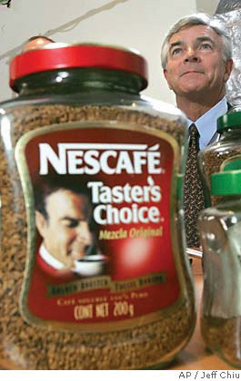
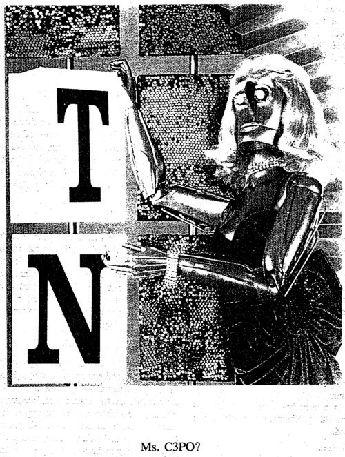

Examine Figure 7.2 "A Coworker Attacks". The office worker on the right has grabbed the office worker on the left and is strangling him. This conduct is clearly criminal, and it is also tortious. Since the tortfeasor here has acted intentionally by grabbing his colleague’s neck, the tort is considered intentional. (It is, in fact, likely assault and battery.)
In an intentional tort, the tortfeasor intends the consequences of his or her act, or knew with substantial certainty that certain consequences would result from the act. This intent can be transferred. For example, if someone swings a baseball bat at you, you see it coming and duck, and the baseball bat continues to travel and hits the person standing next to you, then the person hit is the victim of a tort even if the person swinging the bat had no intention of hitting the victim.
In addition to the physical pain that accompanies being strangled by a coworker, the victim may also feel a great deal of fear. That fear is something we expect to never have to feel, and that fear creates the basis for the tort of assaultAn intentional, unexcused act that creates in another person a reasonable apprehension or fear of immediate harmful or offensive contact.. An assault is an intentional, unexcused act that creates in another person a reasonable apprehension or fear of immediate harmful or offensive contact. Note that actual fear is not required for assault—mere apprehension is enough. For example, have you ever gone to sit down on a chair only to find out that one of your friends has pulled the chair away, and therefore you are about to fall down when you sit? That sense of apprehension is enough for assault. Similarly, a diminutive ninety-pound woman who attempts to hit a burly three-hundred-pound police officer with her bare fists is liable for assault if the police officer feels apprehension, even if fear is unlikely or not present. Physical injuries aren’t required for assault. It’s also not necessary for the tortfeasor to intend to cause apprehension or fear. For example, if someone pointed a very realistic-looking toy pistol at a stranger and said “give me all your money” as a joke, it would still constitute assault if a reasonable person would have perceived fear or apprehension in that situation. The intentional element of assault exists here, because the tortfeasor intended to point the realistic-looking toy pistol at the stranger.
A batteryAny unconsented touching. is a completed assault. It is any unconsented touching, even if physical injuries aren’t present. In battery, the contact or touching doesn’t have to be in person. Grabbing someone’s clothing or cane, swinging a baseball bat at someone sitting in a car, or shooting a gun (or Nerf ball, for that matter, if it’s unconsented) at someone is considered battery. Notice that assault and battery aren’t always present together. Shooting someone in the back usually results in battery but not assault since the victim didn’t see the bullet coming and therefore did not feel fear or apprehension. Similarly, a surgeon who performs unwanted surgery or a dentist who molests a patient while the patient is sedated has committed battery but not assault. Sending someone poisoned brownies in the mail would be battery but not assault. On the other hand, spitting in someone’s face, or leaning in for an unwanted kiss, would be assault and possibly battery if the spit hit the victim’s face, or the kiss connected with any part of the victim’s body.
When someone is sued for assault or battery, several defenses are available. The first is consent. For example, players on a sports team or boxers in a ring are presumed to have consented to being battered. Self-defenseReasonable and proportionate force to defend oneself from harm or injury. and defense of othersReasonable and proportionate force used to defend another person from harm or injury. are also available defenses, bearing in mind that any self-defense must be proportionate to the initial force.
A battery must result in some form of physical touching of the plaintiff. When that physical touching is absent, courts sometimes permit another tort to be claimed instead, the tort of intentional infliction of emotional distress (IIED)Extreme and outrageous conduct (measured objectively) that intentionally or recklessly causes severe emotional distress to another.. In a sense, IIED can be thought of as battery to emotions, but a great deal of caution is warranted here. Many people are battered emotionally every day to varying degrees. Someone may cut you off in traffic, leading you to curse at him or her in anger. A stranger may cut in line in front of you, leading you to exclaim in indignation. A boyfriend or girlfriend may decide to break off a relationship with you, leading to hurt feelings and genuine grief or pain. None of these situations, nor any of the normal everyday stresses of day-to-day living, are meant to be actionable in tort law. The insults, indignities, annoyances, or even threats that we experience as part of living in modern society are to be expected. Instead, IIED is meant to protect only against the most extreme of behaviors. In fact, for a plaintiff to win an IIED case, the plaintiff has to demonstrate that the defendant acted in such a manner that if the facts of the case were told to a reasonable member of the community, that community member would exclaim that the behavior is “outrageous.” Notice that the standard here is objective; it’s not enough for the plaintiff to feel that the defendant has acted outrageously. In some states, the concern that this tort could be abused and result in frivolous litigation has led to the additional burden that the plaintiff must demonstrate some physical manifestation of the psychological harm (such as sleeplessness or depression) to win any recovery.
http://www.npr.org/templates/story/story.php?storyId=5192571
The Westboro Baptist Church is a small (approximately seventy-member) fundamentalist church based in Topeka, Kansas. Members of the church, led by their pastor, Fred Phelps, believe that American soldier deaths in Iraq and Afghanistan are punishment from God for the country’s tolerance of homosexuality. Church members travel around the country to picket at the funerals of fallen soldiers with large bold signs. Some of the signs proclaim “Thank God for Dead Soldiers.” In 2006 members of the church picketed the funeral of Marine Lance Corporal Matthew Snyder, and Snyder’s father sued Phelps and the church for IIED and other tort claims. The jury awarded Snyder’s family over $5 million in damages, but on appeal, the U.S. Court of Appeals for the Fourth Circuit overturned the verdict. The court found the speech “distasteful and repugnant” but pointed out that “judges defending the Constitution must sometimes share their foxhole with scoundrels of every sort, but to abandon the post because of the poor company is to sell freedom cheaply. It is a fair summary of history to say that the safeguards of liberty have often been forged in controversies involving not very nice people.”Snyder v. Phelps, 580 F.3d 206 (4th Cir. 2009), http://pacer.ca4.uscourts.gov/opinion.pdf/081026.P.pdf (accessed September 27, 2010). Adding insult to injury, the Court of Appeals ordered Snyder’s family to pay over $16,000 in legal fees to the church, which led to an outpouring of support for Snyder on Facebook.“I Support Al Snyder in His Fight against Westboro Baptist Church,” Facebook. http://www.facebook.com/group.php?v=wall&ref=ts&gid=355406162379 (accessed September 27, 2010). The U.S. Supreme Court has accepted the case.
Although the standard for outrageous conduct is objective, the measurement is made against the particular sensitivities of the plaintiff. Exploiting a known sensitivity in a child, the elderly, or pregnant women can constitute IIED. A prank telephone call made by someone pretending to be from the army to a mother whose son was at war, telling the mother her son has been killed, would most certainly be IIED.
Companies must be careful when handling sensitive employment situations to avoid potential IIED liability. This is especially true when terminating or laying off employees. Such actions must be taken with care and civility. Similarly, companies involved in a lot of public interactions should be careful of this tort as well. Bill collectors and foreclosure agencies must be careful not to harass, intimidate, or threaten the people they deal with daily. In one foreclosure case, for example, Bank of America was sued by a mortgage borrower when the bank’s local contractor entered the home of the borrower, cut off utilities, padlocked the door, and confiscated her pet parrot for more than a week, causing severe emotional distress.James Hagerty, “Bank Sorry for Taking Parrot,” Wall Street Journal, March 11, 2010, A1. In 2006, Walgreens was sued for IIED when pharmacists accidentally stapled a form to patient drugs that was not meant to be seen by patients. The form was supposed to annotate notes about patients, but some pharmacists filled in the form with comments such as “Crazy! She’s really a psycho! Do not say her name too loud; never mention her meds by name.”“Walgreens Pharmacists Mock You behind Your Back,” The Consumerist, March 8, 2006, http://consumerist.com/2006/03/walgreens-pharmacists-mock-you-behind-your-back.html (accessed September 27, 2010).
Figure 7.3 Russell Christoff
Another intentional tort is the invasion of privacyThe intrusion into the personal life of another without legal justification.. There are several forms of this tort, with the most common being misappropriationUsing another’s name, likeness, or identifying characteristic without his or her permission.. Misappropriation takes place when a person or company uses someone else’s name, likeness, or other identifying characteristic without permission. For example, in 1986 model Russell Christoff posed for a photo shoot for Nestlé Canada for Taster’s Choice coffee. He was paid $250 and promised $2,000 if Nestlé used his photo on its product. In 2002 he discovered Nestlé had indeed used his photo on Taster’s Choice coffee without his permission (Figure 7.3 "Russell Christoff"), and he sued Nestlé for misappropriation. A California jury awarded him over $15 million in damages.Jaime Holguin, “$15.6M Award for Coffee ‘Mug,’” CBSnews.com, February 2, 2005, http://www.cbsnews.com/stories/2005/02/01/national/main670754.shtml (accessed September 27, 2010). Misappropriation can be a very broad tort because it covers more than just a photograph or drawing being used without permission—it covers any likeness or identifying characteristic. For example, in 1988 Ford Motor Company approached Bette Midler to sing a song for a commercial, which she declined to do. The company then hired someone who sounded just like Midler to sing one of Midler’s songs, and asked her to sound as much like Midler as possible. The company had legally obtained the copyright permission to use the song, but Midler sued anyway, claiming that the company had committed misappropriation by using someone who sounded like her to perform the commercial. An appellate court held that while Ford did not commit copyright infringement, it had misappropriated Midler’s right to publicity by hiring the sound-alike,Midler v. Ford Motor Company, 849 F.3d 460 (9th Cir. 1988). and a jury awarded her over $400,000 in damages.
In addition to someone’s voice, an identifying characteristic can be the basis for misappropriation. For example, Samsung Electronics ran a series of print advertisements to demonstrate how long-lasting their products can be. The ads featured a common item from popular culture along with a humorous tagline. One of the ads featured a female robot dressed in a wig, gown, and jewelry posed next to a game show board that looked exactly like the game show board from Wheel of Fortune (Figure 7.4 "Samsung Advertisement"). The tagline said, “Longest-running game show. 2012 A.D.” An appellate court held that Vanna White’s claim for misappropriation was valid, writing “the law protects the celebrity’s sole right to exploit [their identity] value whether the celebrity has achieved her fame out of rare ability, dumb luck, or a combination thereof.”White v. Samsung Electronics America, 971 F.2d 1395 (9th Cir. 1992). The lesson for companies is that in product marketing, permission must be carefully obtained from all persons appearing in their marketing materials, as well as any persons who might have a claim to their likeness or identifying characteristic in the materials.
Figure 7.4 Samsung Advertisement
Source: Photo courtesy of the U.S. federal government, http://commons.wikimedia.org/wiki/File:White-v-samsung-dissent-appendix-2.png.
Invasion of privacy can also take the form of an invasion of physical solitude. Actions such as window peeping, eavesdropping, and going through someone’s garbage to find confidential information such as bank or brokerage statements are all examples of this form of tort. Media that are overly aggressive in pursuing photos of private citizens may sometimes run afoul of this tort.
Another important intentional tort for businesses is false imprisonmentIntentionally confining or restraining another person’s movement without justification.. This tort takes place when someone intentionally confines or restrains another person’s movement or activities without justification. The interest being protected here is your right to travel and move about freely without impediment. This tort requires an actual and present confinement. If your professor locks the doors to the classroom and declares no one may leave, that is false imprisonment. If the professor leaves the doors unlocked but declares that anyone who leaves will get an F in the course, that is not false imprisonment. On the other hand, a threat to detain personal property can be false imprisonment, such as if your professor grabs your laptop and says, “If you leave, I’ll keep your laptop.” Companies that engage in employee morale-building activities should bear in mind that forcing employees to do something they don’t want to do raises issues of false imprisonment. False imprisonment is especially troublesome for retailers and other businesses that interact regularly with the public, such as hotels and restaurants. If such a business causes a customer to become arrested by the police, for example, it may lead to the tort of false imprisonment. In one case, a pharmacist who suspected a customer of forging a prescription deliberately caused the customer to be detained by the police. When the prescription was later validated, the pharmacist was sued for false imprisonment. Businesses confronted with potential thieves are permitted to detain suspects until police arrive at the establishment; this is known as the shopkeeper’s privilegeThe right of a business owner to detain a suspected shoplifter for a reasonable period of time and under reasonable conditions.. The detention must be reasonable, however. Store employees must not use excessive force in detaining the suspect, and the grounds, manner, and time of the detention must be reasonable or the store may be liable for false imprisonment.
Intentional torts can also be committed against property. Trespass to landIntentional entry to land owned by another without a legal excuse. occurs whenever someone enters onto, above, or below the surface of land owned by someone else without the owner’s permission. The trespass can be momentary or fleeting. Soot, smoke, noise, odor, or even a flying arrow or bullet can all become the basis for trespass. A particular trespass problem takes place in suburban neighborhoods without clearly marked property lines between homes. Children are often regular trespassers in this area, and even if they are trespassing, homeowners are under a reasonable duty of care to ensure they are not harmed. When there is an attractive nuisanceAny item or condition on a property that would be attractive and dangerous to children, even if the children are trespassing. on the property, homeowners must take care to both warn children about the attractive nuisance and protect them from harm posed by the attractive nuisance. This doctrine can apply to pools, abandoned cars, refrigerators left out for collection, trampolines, piles of sand or lumber, or anything that might pose a danger to children and that they cannot understand or appreciate. There may be times, however, when trespass is justified. Obviously, someone invited by the owner is not a trespasser; such a person is considered an invitee until the owner asks him or her to leave. Someone may have a license to trespass, such as a meter reader or utility repair technician. There may also be times when it may be necessary to trespass—for example, to rescue someone in distress.
Trespass to personal propertyUnlawful taking or harming of another person’s property without the owner’s permission. is the unlawful taking or harming of another’s personal property without the owner’s permission. If your roommate borrowed your vehicle without your permission, for example, it would be trespass to personal property. The tort of conversionCivil tort of stealing property from another person. takes place when someone takes your property permanently; it is the civil equivalent to the crime of theft. If you gave your roommate permission to borrow your car for a day and he or she stole your car instead, it would be conversion rather than trespass. An employer who refuses to pay you for your work has committed conversion.
Another intentional tort is defamationPublishing or saying untrue statements about a living person that harms his or her reputation., which is the act of wrongfully hurting a living person’s good reputation. Oral defamation is considered slanderOral form of defamation., while written defamation is libelWritten form of defamation.. To be liable for defamation, the words must be published to a third party. There is no liability for defamatory words written in a secret diary, for example, but there is liability for defamatory remarks left on a Facebook wall. Issues sometimes arise with regard to celebrities and public figures, who often believe they are defamed by sensationalist “news” organizations that cover celebrity gossip. The First Amendment provides strong protection for these news organizations, and courts have held that public figures must show actual maliceConscious, intentional wrongdoing. before they can win a defamation lawsuit, which means they have to demonstrate the media outlet knew what it was publishing was false or published the information with reckless disregard for the truth. This is a much higher standard than that which applies to ordinary citizens, so public figures typically have a difficult time winning defamation lawsuits. Of course, truth is a complete defense to defamation.
Defamation can also take place against goods or products instead of people. In most states, injurious falsehood (or trade disparagement)Publishing false information about another person’s product. takes place when someone publishes false information about another person’s product. For example, in 1988 the influential product testing magazine Consumer Reports published a test of the Suzuki Samurai small SUV, claiming that it “easily rolls over in turns.” Product sales dropped sharply, and Suzuki sued Consumers Union, the publisher, for trade disparagement. The case was settled nearly a decade later after a long and expensive legal battle.
Businesses often make claims about their products in marketing their products to the public. If these claims are false, then the business may be liable for the tort of misrepresentation, known in some states as fraudThe misrepresentation of facts (lying) with knowledge they are false or with reckless disregard for the truth.. Fraud requires the tortfeasor to misrepresent facts (not opinions) with knowledge that they are false or with reckless disregard for the truth. An “innocent” misrepresentation, such as someone who lies without knowing he or she is lying, is not enough—the defendant must know he or she is lying. Fraud can arise in any number of business situations, such as lying on your résumé to gain employment, lying on a credit application to obtain credit or to rent an apartment, or in product marketing. Here, there is a fine line between pufferyPromotional statements expressing subjective views., or seller’s talk, and an actual lie. If an advertisement claims that a particular car is the “fastest new car you can buy,” then fraud liability arises if there is in fact a car that travels faster. On the other hand, an advertisement that promises “unparalleled luxury” is only puffery since it is opinion. Makers of various medicinal supplements and vitamins are often the target of fraud lawsuits for making false claims about their products.
Finally, an important intentional tort to keep in mind is tortious interferenceIntentional damage of another person’s valid contractual relationship.. This tort, which varies widely by state, prohibits the intentional interference with a valid and enforceable contract. If the defendant knew of the contract and then intentionally caused a party to break the contract, then the defendant may be liable. In 1983 oil giant Pennzoil made a bid for a smaller oil rival, Getty Oil. A competitor to Pennzoil, Texaco, found out about the deal and approached Getty with another bid for a higher amount, which Getty then accepted. Pennzoil sued Texaco, and a jury awarded over $10 billion in damages.
Assault is any intentional act that creates in another person a reasonable fear or apprehension of harmful or offensive contact. A battery is a completed assault, when the harmful or offensive contact occurs. The intentional infliction of emotional distress (IIED) is extreme and outrageous conduct that intentionally causes severe emotional distress to another person. In some states, IIED requires a demonstration of physical harm such as sleeplessness or depression. This is a difficult tort to win because of its inherent clash with values embodied by the First Amendment. Misappropriation is the use of another person’s name, likeness, or other identifying characteristic without permission. False imprisonment occurs when someone intentionally confines or restrains another person’s movement without justification. Trespass is the entry onto land without the owner’s permission, while conversion is the civil equivalent of the theft crime. Defamation is the intentional harm to a living person’s reputation, while trade disparagement takes place when someone publishes false information about someone else’s product. Fraudulent misrepresentation is any intentional lie involving facts. Tortious interference is the intentional act of causing someone to break a valid and enforceable contract.